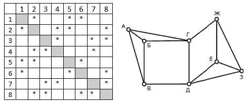

<div><table cellspacing="0" cellpadding="0" style="border-collapse:collapse"><tr><td style="width:480.2pt; padding-right:5.4pt; padding-left:5.4pt; vertical-align:top"><p style="margin:3pt; line-height:15pt"><span style="font-family:'Times New Roman'; font-size:14pt">(№</span><span style="font-family:'Times New Roman'; font-size:14pt">&#xa0;</span><span style="font-family:'Times New Roman'; font-size:14pt">6364) На рисунке справа схема дорог Н-ского района изображена в виде графа, в таблице содержатся сведения о длинах этих дорог (в километрах). Так как таблицу и схему рисовали независимо друг от друга, то нумерация населённых пунктов в таблице никак не связана с буквенными обозначениями на графе. В таблице в левом столбце указаны номера пунктов, откуда совершается движение, в первой строке – куда.</span></p><p style="margin:3pt; line-height:15pt"></p><p style="margin:3pt; line-height:15pt"><span style="font-family:'Times New Roman'; font-size:14pt">Определите длину маршрута EDCFA.</span></p></td></tr></table></div>